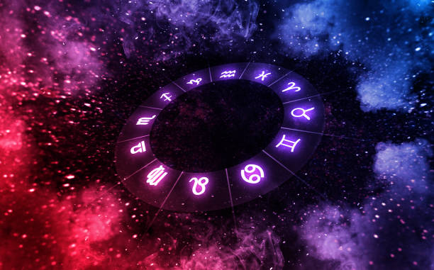
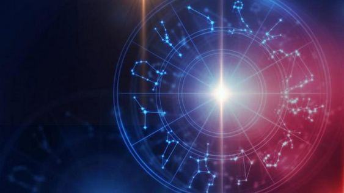

Los Signos del Zodiaco
En la astrología occidental, los signos zodiacales o signos astrológicos, son los doce sectores de treinta grados de la eclíptica desde el equinoccio vernal, una de las intersecciones con la elíptica con el ecuador celeste, también conocido como Punto Aries. De acuerdo con esta astrología, los fenómenos celestes reflejan o rigen las actividades humanas, de forma que se sostiene que los doce signos del Zodíaco representan doce personalidades básicas o modelos de expresión característicos. El orden de los doce signos tradicionales son: Aries, Tauro, Géminis, Cáncer, Leo, Virgo, Libra, Escorpio, Sagitario, Capricornio, Acuario y Piscis. El nombre de cada sector fue dado en Babilonia, para luego ser adoptados en la antigua Grecia, según las constelaciones que pasaban en el momento de nombrarlos.
Los signos zodiacales son distintos a las constelaciones zodiacales. De acuerdo al modelo de Ptolomeo, las estrellas de las constelaciones zodicacales están sobre la octava esfera y tienen extensiones diferentes, mientras que los signos zodiacales están en la novena esfera ocupando sectores del mismo tamaño (30º), debido a la precesión de los equinoccios signos y constelaciones zodiacales se van desplazando de forma que las fechas en las que el Sol oculta tras de sí las constelaciones y los signos están desplazados en casi un mes respecto a las que tenían hace 2300 años en las que ambas se hicieron coincidir.
1.1 "Explora la astrología y descubre el poder de los signos zodiacales en tu vida diaria."
Los signos están influenciados por un planeta o astro y estos llevan nombres de la mitología romana antigua, que tienen el mismo equivalente en la mitología griega (ejemplo, Venus: Afrodita; el Sol: Helios). El culto dejó de practicarse tras la prohibición de la inquisición cristiana (s. IV d. C.), y fue retomado varios siglos después a partir del Renacimiento (s. XVI-XVII), o más tarde incluso.
Tanto en la astrología occidental como en la India se enfatiza el espacio y el movimiento del Sol, la Luna y los planetas en el cielo a través de cada uno de los signos zodiacales. En la astrología china, en cambio, el énfasis se encuentra en el tiempo, con el zodiaco operando en ciclos de años, meses y horas del día. Una característica común de las tres tradiciones, no obstante, es la importancia del signo ascendente, es decir, el signo zodiacal que está ascendiendo, según la rotación de la Tierra, en el horizonte oriental en el momento del nacimiento de la persona (esto varía según el lugar , por ejemplo en China y medio oriente).
Creencia Popular
Los signos del zodiaco son una herramienta útil para comprender nuestras personalidades, rasgos de carácter, fortalezas y debilidades. Cada uno de los doce signos está asociado con una serie de características únicas, y la astrología utiliza estos signos para interpretar las relaciones entre los planetas y prever los acontecimientos futuros. Pero más allá de la predicción del futuro, los signos zodiacales pueden ser una herramienta para autoconocimiento y crecimiento personal.
Al conocer nuestro signo zodiacal, podemos entender mejor nuestra forma de ser y de pensar, nuestras preferencias y tendencias, y nuestras fortalezas y debilidades. Por ejemplo, los signos de fuego ( Aries, Leo y Sagitario ) suelen ser personas apasionadas, enérgicas y aventureras, mientras que los signos de agua ( Cáncer, Escorpio y Piscis ) suelen ser más emocionales, intuitivos y sensibles. Los signos de aire ( Géminis, Libra y Acuario ) suelen ser más racionales, comunicativos y sociales, mientras que los signos de tierra ( Tauro, Virgo y Capricornio ) suelen ser más prácticos, estables y realistas.
"Los signos zodiacales pueden ser una herramienta para autoconocimiento y crecimiento personal. ¡Descubre el tuyo hoy mismo!"
Además de conocer nuestras características básicas, podemos profundizar en la astrología para entender mejor nuestros patrones de comportamiento, relaciones y ciclos de vida. Por ejemplo, la carta astral de una persona, que incluye la posición de los planetas en el momento de su nacimiento, puede ofrecer información más detallada sobre su personalidad y vida. También puede ayudarnos a entender cómo se relacionan los planetas en nuestra vida diaria y cómo podemos utilizar esa energía de manera positiva.
En resumen, los signos zodiacales pueden ser una herramienta valiosa para comprendernos mejor a nosotros mismos y a los demás. Al conocer nuestros rasgos de carácter y patrones de comportamiento, podemos trabajar en nuestras debilidades y desarrollar nuestras fortalezas, lo que nos permite crecer y evolucionar como seres humanos. Sin embargo, es importante recordar que la astrología es una herramienta y no una ciencia exacta, por lo que debemos usarla con precaución y mantener una mente abierta y crítica.
Rumores
El signo ascendente y el signo lunar
De la misma manera, es primordial conocer el signo ascendente y el signo lunar de una personas, si queremos saber cómo es su personalidad. La diferencia de estos con el signo solar (o el que te correspondería según las listas superiores por fecha de nacimiento) es que este último solo nos puede dar un rasgo general del carácter de una persona. La posición del Sol en la carta astral marca el yo y la identidad, mientras que si deseamos indagar un poco más en el interior de alguien, necesitaremos saber, por ejemplo, su manera de sentir las cosas. Esto lo da el signo lunar, o la localización de la luna en el momento del nacimiento. El ascendente, en su caso, delatará cómo se ve esa persona a ojos de los demás, incluso físicamente.
Los planetas personales: Mercurio, Venus y Marte
A los tres planetas más cercanos a la Tierra, Mercurio, Venus y Marte, se les designa como planetas personales por afectar más directamente a la personalidad de cada persona a nivel individual. Son los puntos más importantes a tener en cuenta dentro de la carta astral de una persona, junto con el signo solar, signo ascendente y signo lunar. Por lo que la manera de designar la ubicación de tu planeta en una constelación se hace mediante la fecha de nacimiento.
El planeta Mercurio. Rige la mente y la comunicación. Con otras palabras, la manera que esa persona tendrá de pensar y comunicarse. Bajo su mandato están los signos de Géminis y Virgo. Se le conoce además, por ser el más temido cuando se pone en situación retrógrada.
El planeta Venus. Conocido como el cuerpo celeste encargado del amor, también del placer, la belleza y la creatividad. La manera de relacionarte sentimentalmente y con la estética pasa por sus manos. Gobierna a Tauro, el mejor signo para tener una relación y Libra, los más románticos del horóscopo.
El planeta Marte. Encargado del sexo y, lo más importante: nuestras acciones. La manera en la que te comportas en tu día a día, cómo reaccionas a los conflictos y tu temperamento salen del cuerpo celeste rojo. Se encarga de Aries.
Los elementos: signos de tierra, agua, aire y fuego
Una de las formas en las se agrupan los doce signos del zodiaco es a través de su elemento natural. Estos no son otros que tierra, agua, aire y fuego. Pertenecer a uno de ellos aporta ciertas cualidades, que son las que hacen que unas constelaciones sean más similares que otras. Los signos de tierra, por ejemplo, son personas más terrenales, disciplinados y tercas. También bastante posesivos, cualidad que no comparte con los signos de aire. Son bastante independientes, aunque muy soñadores y creativos. Los signos de agua, por su parte, son emocionales y sensibles. Muy fuertes, eso sí, a la par que inteligentes y transparentes. Siempre te dirán la verdad. Los signos de fuego son muy intensos, carismáticos y quizá demasiado seguros de sí mismos. Esto les convierte en almas bastante egocéntricas.
Signos de tierra: Tauro, Virgo y Capricornio
Signos de aire: Géminis, Libra y Acuario
Signos de agua: Cáncer, Escorpio y Piscis
Signos de fuego: Aries, Leo y Sagitario
"Comprende mejor tu personalidad y cómo te relacionas con el mundo gracias a los signos zodiacales."
Preguntas Comunes
¿Cuál es el mejor signo del zodiaco?
El mayor premio es para Sagitario, el signo más optimista del horóscopo. Su positividad anima a todo aquel que le rodea y son los típicos que siempre tienen suerte.
¿Cuál es el peor signo del zodiaco?
Lo siento Géminis, pero sois los más odiados de la rueda zodiacal. ¿Por qué? Vuestra bipolaridad y falta de compromiso os delata.
¿Cuál es el signo del zodiaco con más iniciativa?
Si necesitas un empujón, llama a tu amigo Aries: ¡te dará la iniciativa! Además, son los primeros que expresarán sus pensamientos sin importarles quién está delante.
¿Cuál es el mejor signo del zodiaco para tener una relación?
Comprometidos, estables, cariñosos... Cualquier unión saldrá bien con un Tauro ¡porque son los mejores para las relaciones de pareja! Eso sí, son algo posesivos cuando se enamoran.
¿Cuál es el signo del zodiaco más dramático?
¿Aún no lo has adivinado? Son los nacidos bajo esa constelación que siempre se lo toman todo a lo personal y sumamente sensibles. Exactos. Cáncer es el signo más dramático del horóscopo.
¿Cuál es el signo del zodiaco que nunca contesta a los mensajes?
El signo que tiene como manía no responder a los mensajes es Acuario. Les gusta la libertad y les da alergia la tecnología.
¿Cuál es el signo del zodiaco más cabezón?
Capricornio, definitivamente los más cabezones. Jamás les podrás rebatir una idea una vez que se les meta entre ceja y ceja. Y puede que no tengan razón, pero no lo reconocerán.
¿Cuál es el signo del zodiaco más seguro de sí mismo?
Puede que tanta confianza les haga ser unos egocéntricos, pero los Leo son el centro de todas las miradas. Tienen luz propia desde que nacieron (aunque no se lo digas mucho o se lo creerán aún más).
¿Cuál es el signo del zodiaco más romántico?
El amor lo puede todo, o eso es lo que piensan los Libra. Por otro lado, debemos señalar de este signo que son muy indecisos. A cualquier decisión le dan mil vueltas antes de tomar una determinación
¿Cuál es el signo del zodiaco más intenso?
Los Escorpio no tienen término medio: o no sienten nada o lo sienten todo. ¿Por qué tienen tan mala fama? Porque son una montaña rusa emocional de la que siempre puedes salir escaldado o mareado.
¿Cuál es el signo del zodiaco más creativo?
Los Piscis tienen una personalidad especial. Le dan vueltas a todo. Pero esto hace que las ideas que salen de esas mentes sean de las mejores que vas a escuchar.
¿Cuál es el signo del zodiaco más ordenado?
Los Virgo son criticones. Sí. Maniáticos. También. Analíticos. Por supuesto. Pero con ellos siempre tendrás todo en orden, tanto si hablamos de planes como de cosas materiales.
¿Cuáles son los dos nuevos signos del zodiaco del 2023?
Hace ya algunos años que la NASA nos informaba que en el zodiaco astronómico había una constelación más, Ofiuco, que fue considerada la número 13 del horóscopo, pese a ubicarse entre Escorpio y Sagitario.
Este 2023, la NASA nos ha informado de una nueva constelación por la que, al menos durante dos días, el sol sigue su curso a través del zodiaco astronómico. Se trata, nada más y nada menos, que de Cetus.
Pero, ¿qué significa todo esto?¿Cómo afecta a los signos zodiacales que conocíamos? ¿Ha cambiado tu signo? ¿Ahora en vez de Cáncer eres Géminis? ¿Y cómo son estos dos signos nuevos? No desesperes, porque hoy vamos a resolver todas tus dudas al respecto.
¿CUÁLES SON LOS DOS NUEVOS SIGNOS DEL ZODIACO SEGÚN LA NASA?
Como te contábamos, los nuevos signos del zodiaco según la NASA son Cetus y Ofiuco, aunque este último probablemente te suene, puesto que ya llevamos algunos años hablando de él habitualmente.
Y es que, aunque te cueste creerlo, Ofiuco lleva formando parte del zodiaco astronómico mucho tiempo. De hecho, cuando se configuró el horóscopo con sus 12 signos, ya se conocía la existencia de esta constelación, dado que Ptolomeo (un astrónomo griego nacido en el año 100 d.C) ya mencionaba esta constelación en sus escritos.
Se considera, por tanto, que se ignoró de forma deliberada por un asunto meramente matemático. La división resultante de los 360º de la rueda del zodiaco solo podía ser exacta entre 12, y no entre 13.
Este año, a partir del 1 de enero de 2023, la NASA anunciaba que el Sol pasará también, en su vuelta por el círculo del zodiaco, por otra constelación que se encuentra en la región del agua, Cetus. Aunque de ella no hemos oído hablar tanto, al igual que Ofiuco, lleva identificada en nuestro cielo miles de años.